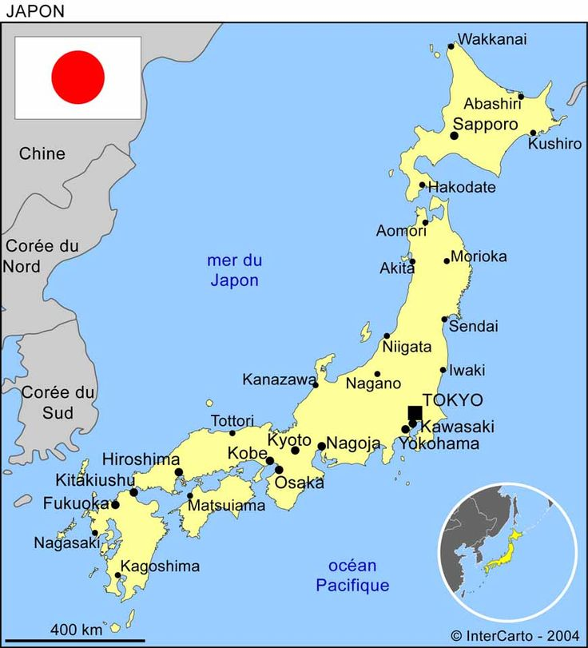

Présentation
Le Japon (en japonais : 日本, Nihon, /ɲihoꜜɴ/ ou Nippon, /ɲippoꜜɴ/) est un pays insulaire de l'Asie de l'Est, situé entre l'océan Pacifique et la mer du Japon, à l'est de la Chine, de la Corée du Sud, de la Corée du Nord et de la Russie, et au nord de Taïwan.

- Forme de l'État : Monarchie constitutionnelle
- Empereur : Naruhito
- Premier ministre : Fumio Kishida
- Capitale : Tokyo